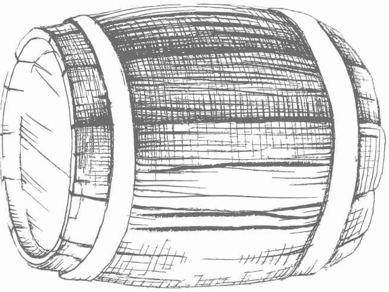

Understanding the data set.
The Whiskies Data Set had 17 different attributes, 12 of which related to the taste and aroma of each
whiskey on an increasing scale from 1 to 4.
Task.
For this visualization, I chose to represent the flavor profile for a single whiskey in the form of a
heat map as a proof of concept. The reader should be able to easily glance over the flavor profile and
determine how strong a certain element is in the drink.
Creating the Visualization.
I used Canva to draw and create the heatmap. I positioned the categorical variables (flavor) on the
horizontal axis and the sequential variable on (strength) the vertical axis to produce the map. I
leveraged colorbrewer2.org to choose a sequential color pallete in the colors and tones of a shot
whiskey. The lightest color (yellow) represents a lighter flavor profile, while the darkest color
(brown) represents a stronger flavor profile. I finished the visualization by adding a pencil sketch
of a glass of whiskey with the name of the drink being profiled for context.